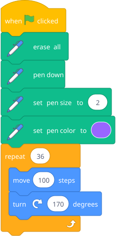
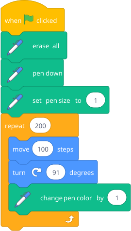
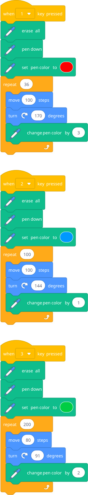

Introduce the pen extension (click "Add Extension" at bottom-left, choose "Pen"). Show him this script and let him run it:

Then ask: "What happens if you change 170 to 160? What about 144? What about 91?" Let him experiment. He's doing modular arithmetic without knowing it. The visual feedback is instant and beautiful.
| Angle | What it draws |
|---|---|
| 170 | 36-pointed star burst |
| 160 | 18-pointed star |
| 144 | 5-pointed star (classic) |
| 135 | Octagon star |
| 120 | Triangle |
| 91 | Slowly spiraling square |
| 89 | Slowly spiraling square (other direction) |
| 61 | Dense spirograph |

Key insight: A loop with slightly different numbers produces wildly different results. Parameters matter. This is the seed of computational thinking — same structure, different inputs, different outputs.
Build a "spirograph machine" where pressing different number keys draws different patterns.
Hint — blocks he'll need:

Each key = different angle + different repeat count + different colors. He can tune the numbers and build up a whole gallery.